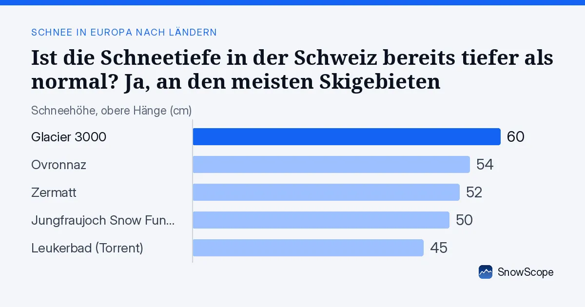
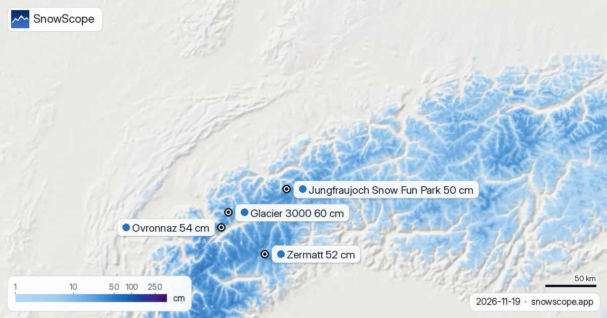

Ist die Schneetiefe in der Schweiz bereits tiefer als normal? Ja, an den meisten Skigebieten
Die Schweizer Berge halten Schnee, der für Mitte November selten ist. Auf Glacier 3000 beträgt die gemessene Tiefe 60 cm, doppelt so viel wie sonst zu diesem Zeitpunkt der Saison, und vier der fünf Hauptskigebiete liegen über ihrem langfristigen Durchschnitt.
Die Live-Schneeprognose für Glacier 3000 in der SnowScope-AppSchneehöhen, Pulverschnee-Alarme und 3D-Karte, gratis.
Schnee liegt bereits über dem Saisonmittel
Novemberschnee ist in den meisten Alpen dünn, aber die Schweiz ist derzeit eine Ausnahme. Der in den Bergen oberhalb von 2000 m gespeicherte Schneewasservorrat entspricht dem, was wir in den besten drei Wochen im Januar sehen. Auf Glacier 3000 (gemessen auf 2238 m) entsprechen die 60 cm Schnee 246 Prozent des Durchschnittswerts für diesen Termin. Ovronnaz auf 1898 m hält 54 cm, also ebenfalls mehr als das Doppelte des Durchschnitts. Auch in tieferen Lagen baut sich die Schneedecke schneller auf, als die Klimastatistik erwarten lässt.
Diese frühe Tiefe ist für die Wasserwirtschaft wichtig. Herbst- und Frühwinterschnee speist Flüsse und füllt Stauseen durch die Schneeschmelze im Frühling. Wenn der Novemberschnee so tief ist, deutet das darauf hin, dass die Schneedecke die Saison mit mehr gespeichertem Wasser als üblich beginnt. Die 18210 Quadratkilometer Schneebedeckung in der Schweizer Modellfläche entsprechen 59 Prozent des abgebildeten Gebiets – eine ungewöhnliche Quote für Mitte November.
| Skigebiet | Heute | Normal an diesem Tag | Anteil am Normalwert |
|---|---|---|---|
| Glacier 3000 | 59 cm | 24 cm | 246 % |
| Ovronnaz | 41 cm | 20 cm | 205 % |
| Zermatt | 221 cm | 31 cm | 713 % |
| Jungfraujoch Snow Fun Park | 67 cm | 74 cm | 91 % |
| Leukerbad (Torrent) | 24 cm | 17 cm | 141 % |

Wo sich das Schneewasser konzentriert
Der dickste Schnee liegt in der Höhe. Oberhalb von 2500 m zeigt das Modell eine mittlere Tiefe von 27 cm in der gesamten Schweiz, und alle Hänge sind schneebedeckt. Zwischen 2000 und 2500 m beträgt der Durchschnitt 14 cm. Unterhalb von 2000 m wird der Schnee schnell dünner: Zwischen 1500 und 2000 m liegen im Durchschnitt nur 7 cm. Die Schneegrenze liegt bei 1300 m; darunter ist der Boden überwiegend schneefrei.
Die Walliser Alpen halten den meisten Schnee im Verhältnis zum Neufall. In den letzten 72 Stunden häuften sich in dieser Region auf den hohen Gipfeln 151 cm Neuschnee an. Das Berner Oberland verzeichnete im selben Zeitraum 99 cm. Diese Zonen sind dort, wo derzeit das meiste Wasser gespeichert wird.

Die fünf größten gemessenen Schneehöhen
Glacier 3000 führt mit 60 cm, gefolgt von Ovronnaz mit 54 cm und Zermatt mit 52 cm. Jungfraujoch Snow Fun Park hält 50 cm, und Leukerbad (Torrent) hat 45 cm. Alle fünf dieser Stationen erhielten in den letzten drei Tagen erheblichen Neuschnee: Glacier 3000 kam 94 cm hinzu, Ovronnaz 79 cm und Zermatt 76 cm. Dies sind keine Freakwerte; sie spiegeln einen regionalen Puls von feuchtem Schnee wider, der vor einigen Tagen begann und sich noch immer über die Alpen ausbreitet.
Schneehöhen nach Höhenstufen
In 500 bis 1000 m Höhe gibt es keinen Schnee am Boden. Zwischen 1000 und 1500 m sind nur 40 Prozent der Fläche schneebedeckt und die mittlere Tiefe beträgt gerade mal 1 cm. Die kritische Grenze liegt bei 1500 m: Darüber beginnt 100 Prozent Schneebedeckung, und die Tiefen wachsen stetig mit der Höhe. Dieser starke Übergag ist typisch für November, wenn die Troposphäre in tiefen Lagen noch warm ist, auf den Gipfeln aber bereits kalt genug für Schnee.
Was kommt als nächstes
Das Modell prognostiziert bis zu 125 cm Neuschnee in den nächsten sieben Tagen, mit dem stärksten Schneefall wahrscheinlich am 22. November (38 cm). In den nächsten drei Tagen können Skigebiete je nach Standort 55 bis 87 cm Schneefall erwarten. Dies wird die gesamte Schneespeicherung deutlich über die Marke von neun von zehn Wintern hinaustreiben. Der Wassergehalt des Neuschnees wird bedeutend für die Frühjahrsabflüsse und Stauseepegel sein.
Anfang Dezember wird das Prognosesignal schwächer. Das Modell zeigt für den Zeitraum 27. November bis 3. Dezember nur 27 cm Neuschnee, was darauf hindeutet, dass das Hauptschneeereignis auf die kommende Woche konzentriert ist.
Trend über vier Tage
Die Schneebedeckung in der Schweiz wuchs in den letzten 24 Stunden allein um 1980 Quadratkilometer und ist in der vergangenen Woche um 5110 Quadratkilometer gewachsen. Am 16. November führte Ovronnaz das Land mit 136 cm an. Am 19. November war Glacier 3000 mit 60 cm an seiner Messstelle an die Spitze gerückt. Diese Verschiebung spiegelt die ungleichmäßige Verteilung des letzten Schneefalls wider: Verschiedene Regionen erhalten unterschiedliche Mengen, und Messstellen in verschiedenen Höhen können unterschiedliche Signale zeigen.
Tipps für Skifahrer
- Schau vor Touren oberhalb von 2000 m in das aktuelle Lawinenbulletin; Neuschnee mit hohem Feuchtegehalt auf steilen Hängen birgt Lawinengefahr.
- Frühjahrsschnee unterhalb von 1500 m ist dünn und kann Steine verbergen. Bleib auf markierten Pisten und bekanntem Gelände, wenn du unterhalb der Schneegrenze auf 1300 m unterwegs bist.
- Auf den Hochgletschern (oberhalb von 2500 m) bietet eine durchschnittliche Tiefe von 27 cm eine gute Basis, aber die Spaltenbruchgefahr bleibt bestehen; Seilschaftsfahrten und Schulungen sind unverzichtbar.
- Stauseebetreiber sollten beachten, dass der Schneefall dieser Woche im Frühling erhebliche Schmelzwasserzuflüsse bringt. Das jetzt gespeicherte Wasser liegt über dem Durchschnitt von neun von zehn Wintern.
- Nutze SnowScopes Karte, um den tiefsten Schnee in deiner gewählten Höhe zu finden. Oberhalb von 2500 m sind alle Hänge schnebedeckt und stabil. Zwischen 2000 und 2500 m wähle nordseitige Hänge für verlässlichere Tiefe.
Zu diesen Zahlen
Die Schneehöhen der Skigebiete sind der meiste Schnee in den oberen Hängen laut SnowScope-Schneemodell (etwa 1 km, Lauf vom 19. November); es sind Schätzungen für eine Fläche, keine Messung an einem Punkt. Werte von Messstationen sind Messungen am angegebenen Tag. Prognosen können sich ändern. Lies vor dem Freeriden immer den offiziellen Lawinenlagebericht.
Diesen Bericht zitieren
Für Forschung, Lehre oder Presse: Zahlen und Grafiken sind unter CC BY 4.0 mit dieser Quellenangabe frei nutzbar.
SnowScope (2026), Ist die Schneetiefe in der Schweiz bereits tiefer als normal? Ja, an den meisten Skigebieten, https://snowscope.app/blog/de/2026/11/switzerland-rare-early-snow-19-november-2026.html, abgerufen am 2026-11-19
SnowScope (Atlas Labs). (2026, November 19). Ist die Schneetiefe in der Schweiz bereits tiefer als normal? Ja, an den meisten Skigebieten. SnowScope snow reports. https://snowscope.app/blog/de/2026/11/switzerland-rare-early-snow-19-november-2026.html
BibTeX
@misc{snowscope2026switzerlandrareearlysnow,
author = {{SnowScope (Atlas Labs)}},
title = {Ist die Schneetiefe in der Schweiz bereits tiefer als normal? Ja, an den meisten Skigebieten},
year = {2026},
month = nov,
howpublished = {\url{https://snowscope.app/blog/de/2026/11/switzerland-rare-early-snow-19-november-2026.html}},
note = {Published 2026-11-19 11:34 UTC; accessed 2026-11-19}
}· CC BY 4.0 · Methoden, Daten und Werkzeuge →
Glacier 3000: Schnee und Temperatur nach Höhe, dieser Winter vs letzter (Werkzeuge) →
Glacier 3000 folgen
Gratis: eine Nachricht, wenn Neuschnee kommt, und jeden Morgen die Vorhersage.
Weitere Schneeberichte

Dezember-Schneechancen aus 46 Wintern und geprüfte Tagespreise: Ski Cooper 49 $, Les 3 Vallées 75,70 €, Oukaïmeden ohne offiziellen Tarif. Wo ein günstiger Dezember-Skitag funktioniert.

Der Gipfelfinder von SnowScope ist eine kostenlose Gipfel-App: Richte dein Handy auf die Berge und die App nennt dir die Gipfel, mit Höhe, Entfernung und Gehzeit. Unsere Tests: 98 % der angezeigten Gipfel sind wirklich in Sicht, und auf echten Fotos korrigierte sie Kompassfehler von bis zu 105° auf 0,15°. Kostenlos mit 3 Namen, alle Gipfel einmalig für 0,99 €.